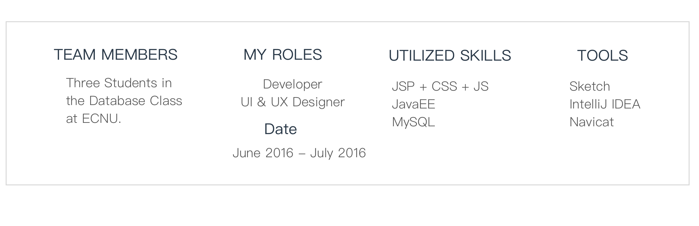

Why I want to develop a PHOTOGRAPHY website ?
In 2016, I was a rookie but had an obsession with photography. I wanted to find more great works from photographers with strong personality. Also, I was eagar to collect my works and show them to more people. However there wasn’t any good site in China. The content flow mechanisms of many photography sites that time were out-moded. For example, a new photographer posts his photos - a really great work, but there are only a few people likes or comments on his work. Thus, his work is just buried without being praised. Therefore, with my passion for both photography and engineering, I conducted thorough user research with my team, thereby enabling us to develop Salotto. We further proposed an impartial photo-ranking mechanism after comparing similar photo sites. This mechanism was developed based on the "freshness" and the priorities of the users’ preferences through tags, which could be tracked down when viewing photos.
GOAL 01: Users can share their photos and interact with each other through commenting, following, and sending messages.
- As a social media platform, our users emphasize great interaction experience with others.
- Our users - photographers have great art accomplishment. In other words, user-friendly storage and management are very essential in order to improve user experience.
GOAL 02: Impartial photo-ranking & content flow mechanism
- Content flow mechanism gives the newcomers chances to obtain appreciation. We need to attach great importance to it for keeping the new users.
- Photo-ranking mechanism should be carefully selected to ensure the site's artistic level for attracting potential users.
The roles I played and My team
Competitive Product Analysis
Studying competitive products to learn both the pros and cons.
There are many different platforms for photographers. To enhance their products' competitiveness, varied functions are created to keep and attract users, for example, flickr has a function named "group" in which photographers can find like-minded person and enjoy discussing their common topics. To specify the design goal, We chose three overseas websites and three original Chinese sites for comparison.
We also compared these six sites' interface design. In conclusion, the typography and typesetting of a photography website are important. All these six sites used Pinterest to show photos on their homepages. By doing so, wonderful photographs are presented in a beautiful way which gives users pleasant feelings.

Mechanism Analysis
Interaction between users through liking and commenting.
- When users first click into a work link, they will find several photos displayed in a matrix, and there would be the interaction field at the bottom of this page, which is hidden at first.
- I designed this pattern given that users' priority is to appreciate the photos. Next priority is to interact with the owner if they need to.